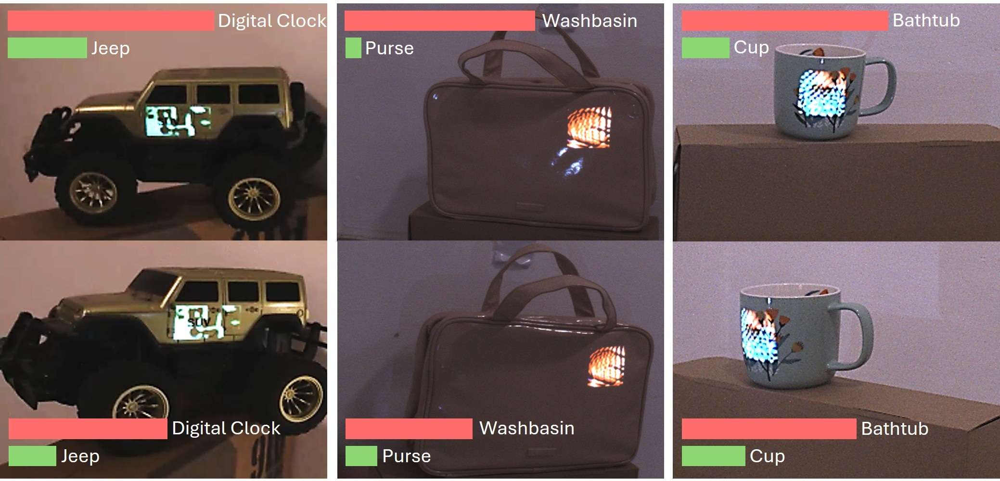
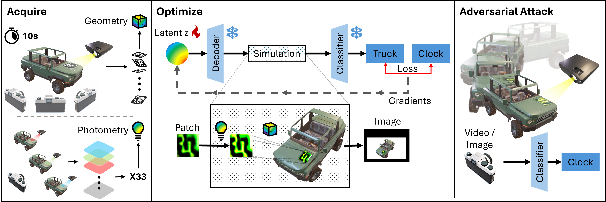
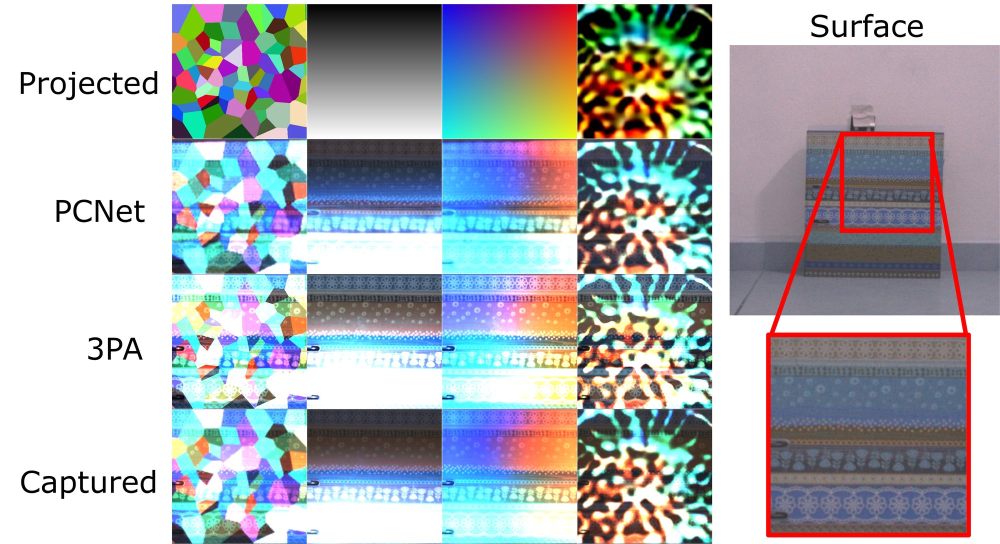
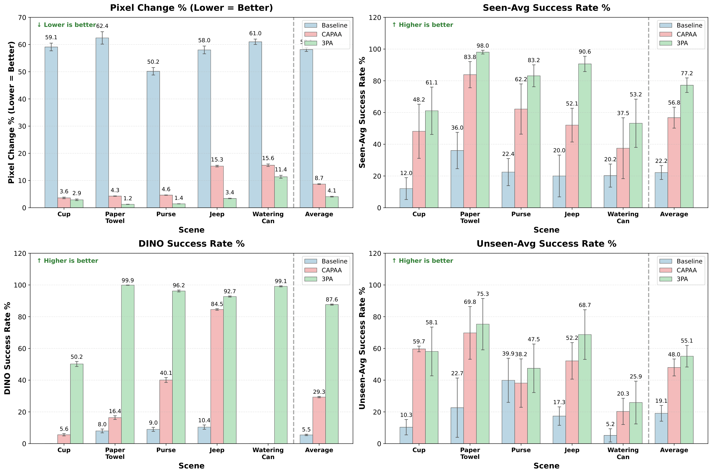
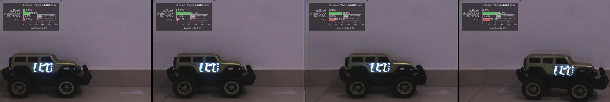
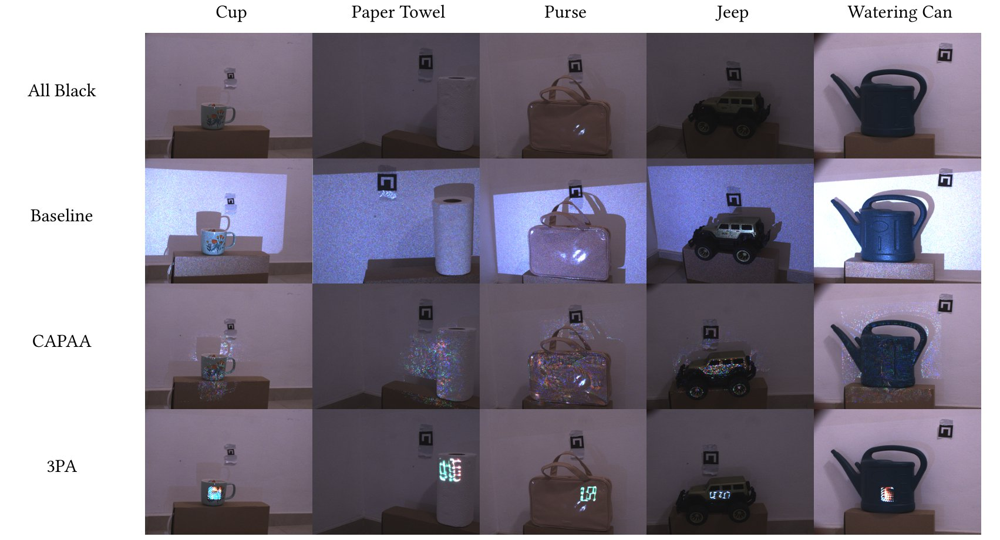

Our method in action. A lightweight projection framework enables robust adversarial attacks through rapid calibration (15 seconds, 33 patterns) and real-time adaptation under viewpoint and scene changes.
Projector-based physical adversarial attacks offer a contact-free and reconfigurable way to manipulate camera inputs, but prior work often either relies on lengthy calibration or overstates real-world generality. We present a projector-camera attack pipeline for indoor settings with local planar, mostly diffuse target regions. Our method uses 33 projected calibration patterns and less than 15 seconds of capture to fit a differentiable per-pixel photometric model and an ArUco-based geometric mapping, then optimizes latent-space patches across viewpoints, models, and sensor-like augmentations.
Relative to the learned PCNet surrogate used by CAPAA, our results show lower reconstruction error (0.077±0.052 vs. 0.120±0.062 RMSE), 33 rather than 500 calibration patterns, and under 1 second rather than roughly 1800 seconds of simulator fitting on the same machine. In physical evaluation across five objects and five novel viewpoints, combined attack success reaches 86.8% on seen models, 79.7% on a DINOv2-based classifier, and 71.7% on unseen models; ablations show that removing simulation or multi-view training sharply degrades performance.
We do not claim outdoor viability or human imperceptibility. Instead, we frame the system as a credible indoor white-box threat, state the assumptions explicitly, analyze failure modes, and discuss defenses such as projection-aware training, temporal light-signature checks, and multi-view consistency tests.

Attack Pipeline. Left: A patch location is selected and an ArUco marker is projected while capturing a short multi-view video, followed by projecting 33 flat color patterns for photometric calibration. Middle: A latent vector is optimized using a downstream classifier under attack by simulating how the decoded patch would appear in camera-space under viewpoint changes and the full project-and-capture process. Right: The optimized patch is projected onto the target, causing the downstream classifier to fail; the attack is robust to viewpoint and object changes.

Qualitative Simulation Results. Various patterns are Projected on a surface and Captured. The process is simulated using PCNet (CAPAA) and our affine model.
| Metric | Ours | CAPAA |
|---|---|---|
| Calibration patterns | 33 | 500 |
| Simulator fitting time | ≤ 1 s | ~1,800 s |
| Optimization time | ~750 s | ~2,400 s |
| RMSE (held-out patterns) | 0.077 ± 0.052 | 0.120 ± 0.062 |

Quantitative Comparisons. Attack success rates vs. CAPAA and a random Gaussian baseline over 5 scenes and 5 novel viewpoints (20 captures per viewpoint). Seen: classifiers used during optimization; DINO: DINOv2-ViT-L14; Unseen: 5 classifiers not used during optimization.
| Evaluation Group | Success Rate |
|---|---|
| Seen models (5 classifiers) | 86.8% |
| DINOv2-ViT-L14 | 79.7% |
| Unseen models (5 classifiers) | 71.7% |
| Configuration | Success Rate |
|---|---|
| Without simulation | 14.1% ± 0.3 |
| Without multi-view training | 2.6% ± 0.2 |
| Without rejuvenation | 97.5% ± 0.1 |
| Without VAE prior | 79.7% ± 0.4 |
| Latent size 4×4 | 13.1% ± 0.3 |
| Latent size 8×8 | 72.9% ± 0.4 |
| Latent size 32×32 | 89.0% ± 0.3 |
| Half physical patch size | 49.2% ± 0.5 |
| Full system (16×16) | 99.5% ± 0.1 |

Dynamic Scenario. The optimized patch is reprojected onto a moving remote-controlled vehicle using real-time tracking (YOLOv11 + SIFT + RANSAC). The attack maintains alignment under slow motion; effectiveness degrades under rapid movement.
The method is evaluated on five everyday objects from ImageNet classes. Different viewpoints of the scenes under attack are shown, with predicted classes by individual classifiers.

Scope. The attacker positions a video projector and camera indoors, projects onto a local, approximately planar, mostly diffuse target region. White-box access to victim classifiers is assumed during optimization. The attack explicitly excludes outdoor daylight, specular surfaces, arbitrary non-planar geometry, and imperceptible projection.
Defensive signatures. Projected adversarial attacks leave physical signatures that defenders can exploit: (1) temporal flicker from projector PWM; (2) limited color gamut (projectors can only add light); (3) viewpoint-dependent appearance inconsistencies; (4) sensor-side random exposure/gain disruption; (5) polarization filtering to separate projected from ambient light.
The full attack pipeline (calibration, optimization, deployment) and evaluation scripts are available in the anonymous repository below.
| File / Module | Purpose |
|---|---|
config.yaml |
All tuneable parameters — classifier choice, training hyper-parameters, paths, scheduler. |
complete_attack.ipynb |
Main notebook — runs the full pipeline end-to-end (Acquisition → Training → Inference). |
attack_config.py |
Loads config & environment, resolves runtime settings. |
classifier_loader.py |
Dynamically imports the classifier module specified in config. |
data_preparation.py |
Loads captured frames, detects ArUco markers, computes homographies, builds DataLoaders. |
vae_utils.py |
Stable Diffusion VAE helpers (encode / decode latents). |
augmentation.py |
Augmentation transforms and the differentiable warp() helper. |
training.py |
Main adversarial-patch training loop. |
evaluation.py |
Post-training CSV export (ablation metrics) and top-patch saving. |
interp_comp_torch.py |
Per-pixel photometric calibration model (affine simulator). |
capture_utils_v2.py |
Camera / projector capture utilities. |
tracking_utils.py |
ArUco-based tracking and projection helper. |
aruco_pose.py |
Camera-pose estimation from ArUco markers. |
classfier_ensemble_v2.py |
Ensemble classifier (ConvNeXt + EfficientNet + MobileNet + Swin). |
classfier_mobilenet.py |
MobileNet V3 Small classifier. |
classfier.py |
Inception V3 classifier. |
classfier_test.py |
EfficientNet B0 test classifier. |
@inproceedings{anonymous2026projattack,
title = {Rapidly Calibrated Projector-Based Physical
Adversarial Patch Attacks},
author = {Anonymous},
booktitle = {Proceedings of the 2026 ACM SIGSAC Conference
on Computer and Communications Security (CCS)},
year = {2026}
}